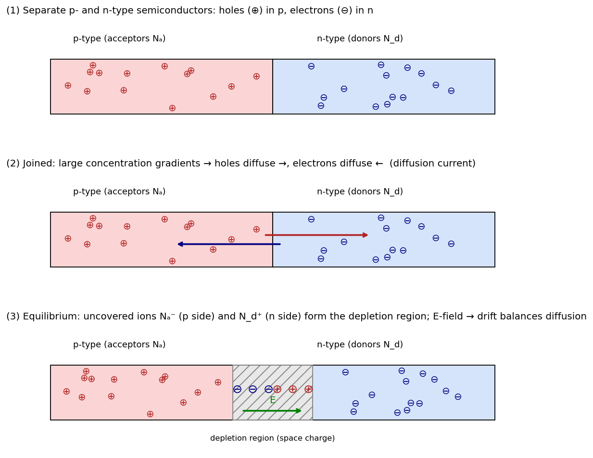

A-Q1 — Formation of the p-n Junction
EE1100diodestutorial-solution
Hub: Tutorial 5 on Diode Circuits and Applications · Next: A-Q2 - Poisson Equation, Field and Potential
Describe briefly how a p-n junction is formed.
1. Theory
Doping. Pure (intrinsic) silicon has equal electron and hole concentrations, at 300 K.
- n-type: doped with donors (P, As; concentration ): electrons are the majority carriers, , .
- p-type: doped with acceptors (B; concentration ): holes are the majority carriers, , . Both materials are electrically neutral overall.
2. How the junction forms
- A p-type and an n-type region are brought into contact (in practice, a single crystal doped differently on the two sides).
- Diffusion. Holes are plentiful on the p side and scarce on the n side, so holes diffuse ; electrons diffuse . This is a diffusion current (driven by the concentration gradient, not by a field).
- Uncovered ions. Each carrier that leaves its side exposes a fixed, charged dopant ion: negative acceptor ions on the p side and positive donor ions on the n side. A space-charge (depletion) region forms, almost free of mobile carriers.
- Built-in field. The two charge layers create an electric field pointing from n to p. It opposes further diffusion and causes a drift current in the opposite direction.
- Equilibrium. Diffusion current drift current for each carrier type, so the net current is zero. The field corresponds to a potential step across the junction, the built-in (contact) potential
and the depletion width is
(the depletion region extends further into the lightly doped side).

3. Numbers (Si, 300 K, , cm⁻³)
| Quantity | Value |
|---|---|
| 0.753 V | |
| 0.327 µm | |
| (lightly doped n side) | 0.298 µm |
| 0.030 µm |
Key points to state
- Diffusion creates the space-charge region; the space charge creates the field; the field causes drift opposing diffusion.
- At equilibrium there is no net current and the Fermi level is constant across the junction.
- The built-in potential cannot be measured with a voltmeter (it is cancelled by contact potentials at the metal terminals).